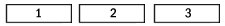

[name]
Imagine how boring it would be for every website on the web to look exactly the same? The same design, layout, colors, images, and text on every website would make any web user tired of surfing the web in a matter of minutes. One of the most important aspects of owning a website is creating a unique layout design that catches your visitors attention. You should give your website an appropriate title, create a logo based on the title, find at least 3 matching colors (for links, background colors, border colors, image colors, etc.), create other logos and images depicting your content, and finally devise a layout of some type that organizes and displays your website's content in a unique way.
I recommend that you get your hands on a good paint program like adobe photoshop and use it as your image editing program. The program is fairly easy to use, and it has a lot of nice features for editing and creating images. I have been using this program for about two years, and I have used it for every image that I have created for my website. I'm sure there are better paint programs out there, but I have no other image editing experience with other programs. Paint Shop Pro has done everything I have ever needed to do concerning image editing.
Your website layout is definitely the most important aspect of being unique. If you were to take a look back at the index page of this tutorial, Index Page of HTML Guide, you can easily notice the layout of my website. My website layout consists of three columns. The left column being a table of contents, pointing out the different sections of my site: Inner Core, Tutorials, and Outer Core. The middle column is where the content of the current web page will be displayed. The right column is an introductory area explaining the content of the current web page. I use this layout for every page of my site, except for web pages that are articles of a tutorial. The layout of your site should make it very easy for visitors to understand how to get around your website, and it should provide easy methods for getting around your website. I have changed the layout of my site about ten times in the last two years, but I believe I have found a keeper. It may take a while for you to design and create the perfect layout for your website, but it is well worth the effort.
When you are creating and designing images for your site, you should keep in mind image mapping. Image maps create linkable sections, or "hotspots", in an image defined in HTML by coordinates of the image. You could have one image, but you could have ten spots on the image used for linking to other web documents. You associate URLs with the "hot spots". Image mapping is very useful for navigational menus, table of contents, and toolbars.
From the HTML code point of view, image maps consist of three parts:
1 - Some place in the HTML source of the body of the document, you must begin an image map with the <MAP></MAP> element. This element has one attribute, NAME="", which is used to associate a name for the map.
2 - The <AREA> element, which is placed inside the <MAP></MAP> element and can take the following attributes: SHAPE="", COORDS="", HREF="", NOHREF="", and ALT="". The SHAPE="" and COORDS="" attributes define a region on the image. If no shape is specified, the default shape used is RECTANGLE.
3 - The <IMG> element goes in the document wherever you would like the place the mapped image. You must use the USEMAP="#" attribute to specify the name of the image map to use.
Possible Shape Attributes
shape="rect" coords="left-x, top-y, right-x, bottom-y"
shape="circle" coords="center-x, center-y, radius"
shape="poly" coords="x1,y1, x2,y2, x3,y3, ..."
NOTE: x and y are measured in pixels from the left/top of the image.
Image Map Example:
<html>
<head><title></title></head>
<body>
<map name="areas">
<area shape="rect" coords="7,5,71,21" href="/index.html">
<area shape="rect" coords="80,5,143,21" href="/index.html">
<area shape="rect" coords="154,5,219,22" href="/index.html">
</map>

</body>
</html>
This document would produce the following: